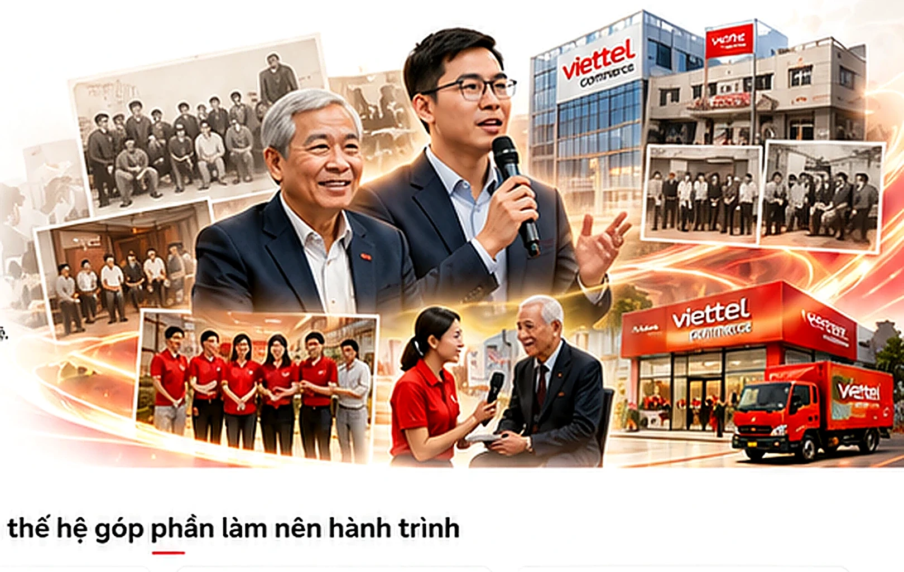

1 1. Lịch sử Tập đoàn Viễn thông Quân đội, NXB QĐND xuất bản năm 2019, tr 234
Ghi chú nguồn 2782Hành trình 30 năm được viết nên bởi trí tuệ, bản lĩnh, ký ức và khát vọng của nhiều thế hệ người Viettel Commerce.

Các trích đoạn được giữ nguyên nội dung theo bản thảo, sắp xếp theo trình tự xuất hiện.
“Lịch sử Viettel ghi lại, nhiều năm sau ngày thành lập (01/6/1989), Công ty Điện tử Viễn thông Quân đội vẫn trong tình trạng “đi làm thuê”, tìm kiếm các hợp đồng để ký kết, xây dựng các công trình, hạ tầng viễn thông cho các đối tác. Sáu năm sau thời gian đi “làm thuê” tích lũy kinh nghiệm và ấp ủ “ước mơ”; n gày 13/6/1995 đã trở thành một dấu mốc mang tính bước ngoặt trong lịch sử Viettel. Thực hiện Quyết nghị của Thường trực Bộ Chính trị, đồng chí Trần Đức Lương, Phó Thủ tướng Chính phủ đã ký quyết định thành lập Công ty Điện tử Viễn thông Quân đội (trên cơ sở Công ty Điện tử Thiết bị Thông tin-Sigelco). Với ngành nghề mới được bổ sung là kinh doanh dịch vụ bưu chính viễn thông trong nước và quốc tế. Sigeleco đã vượt qua hàng rào cản trở độc quyền, tiến hành lập đề án về kinh doanh viễn thông. Đại tá Phạm Ngọc Điệp, nguyên Giám đốc Công ty Sigelco (1993-1995) cho biết: Trong đề xuất cấp giấy phép kinh doanh bưu chính viễn thông, Ban Lãnh đạo Công ty đã giải quyết được 02 vấn đề rất mấu chốt, rất căn bản, có tính chiến lược lâu dài: “Thứ nhất, xin được giấy phép cho Công ty được kinh doanh dịch vụ bưu chính viễn thông cả trong nước và quốc tế. Thứ hai, đặt tên mới cho công ty có thêm chữ “viễn thông”, gọi tắt là “VIETEL” (lúc này trong chữ Vietel chỉ có 01 chữ T, đến năm 2003 mới bổ sung thành Viettel}. Lúc này, Công ty đã có tầm nhìn chiến lược lâu dài, cả trong nước và đối ngoại, hội nhập quốc tế.
Đoạn nguồn 78
“Ngày 20 tháng 10 năm 1995, Ủy ban Kế hoạch Hà Nội cấp giấy kinh doanh số 109822 cho Công ty Điện tử Viễn thông Quân đội với ngành nghề kinh doanh “xuất nhập khẩu các sản phẩm thiết bị thông tin, xây lắp các công trình thiết bị thông tin, đường dây tải điện, trạm biến thế, lắp ráp các thiết bị điện tử, hoạt động kinh doanh các loại dịch vụ bưu chính viễn thông trong nước và nước ngoài ”. Nội dung giấy phép kinh doanh, có thể thấy lúc này Công ty chú trọng nhiệm vụ Xuất nhập khẩu. Để kiện toàn Ban lãnh đạo Công ty Điện tử Viễn thông Quân đội, ĐUQSTW, Bộ Quốc phòng quyết định điều động, bổ nhiệm kiện toàn Ban Giám đốc Công ty và các đơn vị trực thuộc. Các đồng chí: Đàm Rơi - Phó Tư lệnh Binh chủng Thông tin làm Giám đốc Công ty, đồng chí Phạm Ngọc Điệp làm Phó Giám đốc Công ty; các đồng chí: Nguyễn Tiến Mỹ và Bùi Mạnh Hồng làm Quyền Phó Giám đốc Công ty. Quyết định thành lập Xí nghiệp Khảo sát thiết kế và Xí nghiệp Xây lắp công trình trực thuộc Công ty; các phòng, ban và các trưởng phòng, ban của Công ty; Trong đó có Phòng Kinh doanh. Từ đó dịch vụ xuất nhập khẩu liên tục phát triên, trở thành một ngành kinh doanh chính và có triển vọng lâu dài của Công ty, trước hết là nhập khẩu các máy móc, thiết bị phục vụ các hợp đồng xây dựng các công trình thông tin cho Bộ Tư lệnh Thông tin liên lạc. Năm 1997 đứng trước nhu cầu phát triển, Phòng Kinh doanh Công ty Điện tử Viễn thông Quân đội được tách thành 02 bộ phận riêng biệt là Phòng Xuất nhập khẩu và Trung tâm kinh doanh thương mại và Dịch vụ kỹ thuật. Tiến sỹ, Trung tá Hồ Công Việt, Nguyên giáo viên Trường Sỹ quan Chỉ huy kỹ thuật thông tin, về Viettel năm 1995, Trưởng Phòng Xuất nhập khẩu đầu khi thành lập đã bồi hồi nhớ lại: “Là người sỹ quan, cán bộ đảng viên cấp trên giao thì chấp hành thôi, nhưng cũng trăn trở lắm vì lực lượng mỏng, kinh nghiệm ít”, Còn Đại tá Đỗ Ngọc Cường hồi tưởng: “lúc mới thành lập, Phòng chỉ có 7 người, 4 người bộ phận xuất nhập khẩu gồm anh Hồ Công Việt, tôi, Nguyễn Thị Minh Nguyệt và Lê Phú Lâm; bộ phận Radio Trunking có 3 người là đồng chí Tống Viết Trung, đồng chí Đỗ Minh Phương và anh Bùi Ánh Quang. Đến tháng 11 năm 1997 thì bộ phận Radio Trunking cũng sáp nhập về Trung tâm Thương mại và Dịch vụ kỹ thuật. Do nhu cầu nhập khẩu máy móc thiết bị cho binh chủng tăng lên, cần thiết phải có một bộ phận chuyên về xuất nhập khẩu; là một bộ phận độc lập tách rời; đó là một trọng trách mà Binh chủng và Công ty giao cho. Lúc ấy thì tôi nghĩ Phòng sẽ phát triển; song cũng không nghĩ Phòng Xuất nhập khẩu năm ấy sau 30 năm lại lớn mạnh như bây giờ”.
Đoạn nguồn 79
“Thực hiện Chỉ thị số 8G3/A ngày 29 tháng 5 năm 1998 của Đảng ủy Binh chủng Thông tin liên lạc, ngày 14 tháng 8 năm 1998, Đảng ủy Công ty Điện tử Viễn thông Quân đội ra Nghị quyết số 21/NQ-ĐU về việc lãnh đạo chỉ đạo các đơn vị tiến hành đại hội tiến tới đại hội Đảng bộ Công ty lần thứ IV; trong Nghị quyết có nội dung kiện toàn, thành lập mới một số chi bộ cơ sở. Theo đó, Chi bộ Xuất nhập khẩu được thành lập (cùng Quyết định thành lập với Chi bộ Trung tâm Bưu chính); đồng thời chỉ định đồng chí Đỗ Ngọc Cường làm Bí thư chi bộ. Đồng chí Đỗ Ngọc Cường cho biết: “Trước đó, một số đảng viên thuộc phòng Xuất nhập khẩu vẫn sinh hoạt ghép với Chi bộ Trung tâm Thương mại và dịch vụ kỹ thuật; và tôi là Phó Bí thư. Chi bộ đầu tiên được thành lập là thể hiện sự quan tâm của Đảng ủy Công ty. Chi bộ lúc đó chỉ có 4 đảng viên. Nghị quyết chi bộ chưa được đánh máy như bây giờ, chỉ ghi chép trong sổ tay, vậy mà vẫn đoàn kết thống nhất cao, triển khai lãnh đạo, chỉ đạo kịp thời và hoàn thành tốt mọi nhiệm vụ. Từ đó cho đến lúc tôi (Đại tá Đỗ Ngọc Cường) nghỉ hưu, chi bộ và sau này là Đảng bộ năm nào không đạt trong sạch vững mạnh, nhiều năm đạt TSVM xuất sắc”. Đó là dấu ấn đầu tiên về tổ chức Đảng đầu tiên của đơn vị, là tấm gương để Đảng ủy Công ty và đội ngũ đảng viên của Đảng bộ hôm nay cần phát huy và phát huy truyển thống truyền thống cha anh; luôn giữ gìn sự đoàn kết thống nhất trong Đảng; lãnh đạo đơn vị hoàn thành tốt mọi nhiệm vụ được giao.
Đoạn nguồn 81
“Đại tá Đỗ Ngọc Cường bồi hồi nhớ lại, khi phát triển lên Trung tâm, anh rất mừng và mong Trung tâm ngày càng phát triển, anh mong đến một năm nào đó Trung tâm có doanh thu vào Câu lạc lạc bộ 100 tỷ đồng, rồi phấn đấu vào Câu lạc bộ Công ty có doanh thu 1000 tỷ đồng.
Đoạn nguồn 86
“Đồng chí Nguyễn Thị Minh Nguyệt, nguyên Trưởng Ban Kế hoạch Tổng hợp Trung tâm Xuất nhập khẩu khi đó nhớ lại: “Lúc Phòng phát triển lên Trung tâm, cả Trung tâm chỉ có 12 người, trong đó có 5 người là nữ; mình mừng lắm vì nghĩ rằng vị thế của đơn vị sẽ tăng lên, sánh ngang vị thế Xí nghiệp Khảo sát thiết kế và Xí nghiệp Xây lắp Công trình là những đơn vị nòng cốt của Viettel lúc bấy giờ và điều quan trọng là chắc chắn sẽ được bổ sung nhân lực. Sau đó mình được phân công là tổ trưởng tổ phụ nữ đầu tiên Trung tâm. Mình vinh dự được là nữ nhân viên đầu tiên của Tập đoàn trước đây cơ đấy!” (cười).
Đoạn nguồn 87
“Năm 2000 - năm đầu tiên của thiên niên kỷ mới, tình hình kinh tế, chính trị thế giới và khu vực vẫn còn nhiều diễn biến phức tạp. Sau hơn 10 năm thực hiện đường lối đổi mới dưới sự lãnh đạo của Đảng, nhân dân ta đã đạt được nhiều thành tựu quan trọng; thị trường viễn thông trong nước và thế giới phát triển nhanh chóng, tạo ra thời cơ và thách thức cho các doanh nghiệp kinh doanh dịch vụ viễn thông. Công ty Điện tử viễn thông Quân đội sau 10 năm thành lập còn gặp rất nhiều khó khăn, nhưng bước đầu đã tạo được những tiền đề cần thiết để tiếp tục phát triển ngành nghề truyền thống. Thực hiện “ước mơ” kinh doanh dịch vụ viễn thông, Công ty đã quyết định và triển khai thành công việc nghiên cứu, lập dự án tiến tới kinh doanh dịch vụ điện thoại đường dài 178, công nghệ VoIP.
Đoạn nguồn 91
“Trung tâm Xuất nhập khẩu được giao trọng trách này. Trước đó, sau mấy năm thực hiện nhiệm vụ nhập khẩu máy móc thiết bị điện tử, thông tin cho Binh chủng Thông tin liên lạc, Trung tâm cũng đã có một số kinh nghiệm, song đây là lần nhập khẩu thiết bị viễn thông cho Công ty lần đầu tiên, với công nghệ mới SDH là công nghệ mới nhất lúc bấy giờ, trong điều kiện vị thế Công ty lúc đó còn có mức độ, nên cũng gặp không ít khó khăn. Đồng chí Trần Thị Ánh Minh, nguyên Trưởng phòng Tổ chức Lao động nhớ lại: Hồi đó, ngoài xã hội, nhiều người chưa biết đến Viettel là ai; không có được thương hiệu như bây giờ, nên mỗi khi thực hiện các giao dịch, đàm phán về xuất nhập khẩu với các cơ quan chức năng rất khó khăn. Trung tâm Xuất nhập khẩu được Công ty tin tưởng, như một đơn vị hoạt động thương mại với bên ngoài, là những “nhà ngoại giao” của Công ty, nên lúc nào cũng phải xác định là những người “mũ cao, áo dài”, ăn nói phải cẩn trọng và chỉn chu, chắc chắn mới đi đàm phán. Lô hàng đầu tiên nhập về; chi cục Hải quan Hà Nội yêu cầu kiểm đếm từng loại sản phẩm. Giả sử nếu đề kiểm đếm chắc phải mất nhiều ngày; mặt khác hàng phải trải ra đều khắp mặt sân Công ty ở số 1, Giang Văn Minh và rất dễ bị xáo trộn và khó đồng bộ. Để tháo gỡ khó khăn, tôi (Trần Ánh Minh) đã phải tổ chức 02 buổi họp bàn để trao đổi, giao lưu tại Tổng cục Hải quan và tại trụ sở Công ty, mời được cả anh Nguyễn Ngọc Túc là Phó Tổng Cục trưởng Tổng cục Hải quan khi đó tham dự. Bên Viettel thì đầy đủ Ban lãnh đạo tham gia gồm cả anh Xuân, Anh Hùng, anh Dũng, anh Tính. Nội dung các buổi họp là nêu tầm quan trọng của một Công ty thuộc Quân đội có nhiệm vụ làm đơn vị tiên phong trong phá thế độc quyền viễn thông; thiết bị lại là loại hàng hóa công nghệ cao, nên đề nghị Tổng cục Hải quan tạo điều kiện giúp đỡ trong việc nhập khẩu. Và kết quả thật bất ngờ, sau đó, Tổng cục Hải quan đã đồng thuận quan điểm và rất ủng hộ Viettel. Từ những lô hàng đầu tiên được Hải quan tin tưởng, chỉ đạo các Chi cục cho thông quan nhanh chóng, không phải kiểm đếm từng loại thiết bị. Việc làm này đã như “phát súng mở màn” khai thông những lô hàng lớn sau này nhập khẩu được thuận lợi. Đây cũng là bài học cho sự tìm tòi học hỏi, kiên trì, tìm mọi cách tháo gỡ khó khăn để làm đến cùng của cán bộ xuất nhập khẩu.
Đoạn nguồn 93
“Năm 2000, Viettel bắt đầu bước chân vào thị trường viễn thông với khởi đầu là dịch điện thoại đường đài 178, khai trương thử nghiệm ngày 15 tháng 10 năm 2000. Từ đây, Viettel bắt đầu con đường phá độc quyền viễn thông và từng bước phát triển mạnh mẽ. Tháng 7 năm 2004, Viettel tách khỏi Binh chủng thông tin về trực thuộc Bộ Quốc phòng. Ngày 15 tháng 10 năm 2004, Viettel khai trương dịch vụ điện thoại di động. Với sự phát triển nhanh chóng và mạnh mẽ, ngày 06 tháng 4 năm 2005, Bộ Quốc phòng ra Quyết định số 45/2005/QĐ-BQP thành lập Tổng Công ty Viễn thông Quân đội (trên cơ sở Công ty Viễn thông Quân đội). Theo đó các đơn vị trực thuộc cũng phát triển lên mô hình mới. Trung tâm Xuất nhập khẩu phát triển thành Công ty Thương mại và Xuất nhập khẩu Viettel. Sự lớn mạnh của Viettel được tạo nên bằng sức mạnh tổng hợp với những cố gắng vượt bậc của nội lực Viettel, đồng thời có cả những yếu tố “thiên thời, địa lợi, nhân hòa”; trong đó có đóng góp của Trung tâm Xuất nhập khẩu.
Đoạn nguồn 96
“Đồng chí Trần thị Ánh Minh, Nguyên Trưởng phòng Tổ chức - Hành chính Công ty năm đó nhớ lại: Tôi trước làm giáo viên, cơ duyên và may mắn được về Viettel từ năm khi đó Viettel bắt đầu phát triển, nhưng khi đó tên tuổi Viettel cũng chưa được nhiều người biết đến. Chỉ khi Viettel phát triển dịch vụ điện thoại di động và lên Tổng Công ty thì tiếng vang của Viettel mới được cả nước biết đến như một Công ty phá độc quyền viễn thông mà khách hàng là người được hưởng lợi.
Đoạn nguồn 97
“Từ đây, Công ty chính thức thực hiện chế độ doanh nghiệp nhà nước hạch toán độc lập, theo cơ chế thị trường. Khi được hỏi, “trước đây đơn vị hạch toán phụ thuộc; “mọi quyết định kế hoạch, thu, chi đã có trên lo, nay hạch toán độc lập, với cương vị Giám đốc Công ty, anh có lo không?”; Đại tá Đỗ Ngọc Cường chia sẻ: “Lúc đó rất vui; tuy ban đầu cũng có chút lo lắng một chút, nhưng vững tâm vì mình tin với lực lượng của mình được đào tạo cơ bản, nhiệt tình trách nhiệm, mình tin là sẽ làm được và điều quan trọng là được cấp trên tin tưởng; mình được tự chủ, quyết định mọi điều, điều đó quan trọng lắm”. Mình tự lớn lên, trưởng thành từ chính nội lực của mình là chính, đó là truyền thống tốt đẹp của Công ty trong chặng đường xây dựng và phát triển.
Đoạn nguồn 101
“Năm 2006, khi đã phát triển đầy đủ dịch vụ viễn thông; đặc biệt là dịch vụ điện thoại di động phát triển nhanh chóng; Tổng Công ty Viễn thông Quân đội ch ủ trương phải lập riêng cho mình một hệ thống kênh phân phối dịch vụ và thiết bị đầu cuối thay vì phụ thuộc vào hệ thống các đại lý trước đây. Tổng Công ty đã chỉ đạo Công ty Viễn thông Viettel “ tổ chức quy hoạch kênh phân phối các cửa hàng, đại lý và điểm bán hàng tại các tỉnh, thành phố ” 1, một mặt chỉ đạo và đầu tư cho Công ty Thương mại và Xuất Nhập khẩu, nghiên cứu lập phương án, tổ chức xây dựng 1-2 siêu thị đầu tiên để làm điểm trước khi nhân rộng với quan điểm phải ở thành phố lớn, nơi kinh doanh đông đúc, sầm uất, đẹp, thể hiện nổi bật hình ảnh thương hiệu Viettel. Địa điểm đầu tiên lựa chọn đặt siêu thị là khu vực triển lãm quốc gia, tại góc ngã tư mặt phố Giảng Võ giao với phố Ngọc Khánh Hà Nội (thường gọi là khu Trung tâm thương mại VKO). Từ tháng 2 năm 2006, Công ty đã bắt tay vào công tác chuẩn bị thuê đối tác thiết kế, thi công với quan điểm làm siêu thị đầu tiên phải nổi bật về hình thức, rộng rãi và tiện ích.
Đoạn nguồn 104
“Đồng chí Lâm Việt Hùng, nguyên Trưởng Siêu thị lúc ấy, nay chia sẻ: “Tôi thật vinh dự là Trưởng siêu thị đầu tiên ở Ngọc Khánh và là Trưởng Siêu thị đầu tiên của cả hệ thống sau này. Để chuẩn bị cho khai trương, được sự hỗ trợ của cán bộ Công ty và Tổng Công ty; tất cả 16 anh chị em trong siêu thị đều đã được đào tạo và có cả mấy tuần làm việc cật lực chuẩn bị cho khai trương. Đêm trước ngày khai trương, tôi cùng anh em đến gần 01 giờ sáng mới ngủ vì lo chuẩn bị hàng hóa, xếp đặt hàng trên các tủ quầy; tất cả ăn, ngủ tại chỗ; đến 5 giờ sáng tôi đã gọi mọi người dậy trang trí. 9 giờ sáng ngày 03 tháng 5 thì khai trương. Thật xúc động và tự hào anh ạ. Kỷ niệm đẹp đẽ đó sẽ còn in đậm mãi trong tâm trí tôi”.
Đoạn nguồn 107
“Đại tá Đỗ Ngọc Cường, nguyên Phó Bí thư Đảng ủy nhớ lại: “ Nâng cấp từ chi bộ lên đảng bộ, anh em cán bộ Đảng viên rất mừng vì được Đảng ủy Tổng Công ty quan tâm". Toàn Công ty lúc đó cũng chỉ hơn 100 người, Đảng bộ lúc đó chỉ có 35 đảng viên. Chị Nguyễn Thị Minh Nguyệt, nguyên là Đảng ủy viên kể lại, buổi họp Đảng ủy đầu tiên, anh Lê Duy Hòa, Phó Giám đốc Công ty khi đó được chỉ định là Bí thư Đảng ủy Công ty còn ước “bao giờ Đảng bộ mình có số Đảng viên gấp 9,10 lần như bây giờ thì Công ty lúc ấy hoành tráng lắm nhỉ? ”.
Đoạn nguồn 118
“Đến năm 2008, Mạng điện di động Viettel vươn lên vị trí số 1 Việt Nam với hạ tầng rộng khắp và hơn 12 triệu thuê bao. Thương hiệu Viettel được biết đến là một thương hiệu mạnh, khẳng định vị thế, khi được xếp vào một trong mười doanh nghiệp hàng đầu của Việt Nam, là doanh nghiệp viễn thông số 1 trong cung cấp dịch vụ di động. Hệ thống siêu thị, cửa hàng đa dịch vụ của Viettel gần như phủ kín khắp các tỉnh thành, quận huyện. Đây là thế mạnh của Viettel trong việc cung cấp trực tiếp các sản phẩm dịch vụ tới người tiêu dùng. Tuy nhiên trong mấy năm phát triển “nóng”; Viettel nhận thấy đã đến lúc phải rà soát lại để tối ưu hệ thống.
Đoạn nguồn 122
“Tôi (Thanh-Ban Biên Tập) còn nhớ trong một buổi giao ban cuối tháng 9 năm 2008,, khi có ý kiến cho rằng cùng Tổng Công ty đang tồn tại 02 hệ thống siêu thị Viettel tại Công ty Viễn thông Viettel (VTT) và Công ty Thương mại và Xuất nhập khẩu Viettel đã có những vấn đề bất cập nảy sinh. Đồng chí Nguyễn Mạnh Hùng, Phó Tổng Giám đốc chủ trì cuộc họp đã chỉ đạo, vậy phải nhất thể lại và tối ưu cho hợp lý để hệ thống này tốt lên, như một kênh phân phối khác biệt của Viettel, là “cầu nối” của Viettel với khách hàng. Anh Lê Công Cẩn, khi đó là Trưởng Phòng Kế hoạch phát biểu “theo tôi, nên để đưa hệ thống này cho ông Cường quản lý, VTT tập trung phát triển dịch vụ thôi”, Và sau đó quyết định được đưa ra.
Đoạn nguồn 123
“Đại tá Đỗ Ngọc Cường nhớ lại; khi Tổng Công ty quyết định đưa hệ thống siêu thị từ VTT về thì anh em trong Công ty mừng lắm. Mình nỗ lực mấy năm trời từ 2006 đến nay mới xây dựng được mấy chục siêu thị, nay một lúc có thêm ngay 68 siêu thị. Sau đó lại được VTT hỗ trợ hình ảnh, hỗ trợ 3 tháng thuê nhà, toàn bộ nhân sự hơn 400 người chuyển sang, chỉ cần vài tháng tối ưu lại thì hệ thống siêu thị của Công ty đã trở nên rất mạnh. Trở thành chuỗi bán lẻ điện thoại lớn thứ hai tại Việt Nam.
Đoạn nguồn 124
“Đúng là chỉ một quyết định làm cho Công ty “như hổ được mọc thêm cánh, rồng mọc thêm vây”. Đó là dấu mốc quan trọng để Công ty bứt phá vươn lên, đạt doanh thu năm 2008 là 2608 tỷ đồng, tăng gấp hơn 2 lần năm 2007.
Đoạn nguồn 125
“Đặc biệt về phương hướng nhiệm vụ lãnh đạo của Đảng bộ đến năm 2010, Đại hội xác định 5 mục tiêu, trong đó mục tiêu đầu tiên là “Phát triển Công ty theo mô hình các Công ty kinh d o anh tự hoạch toán, lấy kinh doanh điện thoại di động và xuất nhập khẩu làm chủ đạo”.
Đoạn nguồn 132
“Ngày 8 tháng 1 năm 2009, Đảng ủy Công ty đã tổ chức hội nghị ra nghị quyết lãnh đạo thực hiện nhiệm vụ trong năm xác định một số nhiệm vụ trọng tâm cần tập trung thực hiện năm 2009; trong đó có nội dung “T iếp tục duy trì tốc độ tăng trưởng của Công ty trên tất cả các mặt: doanh thu, sản lượng, xây dựng kênh phân phối…. Xây dựng mô hình tổ chức Công ty phù hợp với yêu cầu nhiệm vụ”.
Đoạn nguồn 136
“Đại tá Nguyễn Chí Thanh, Phó Giám đốc Công ty, Giám đốc Trung tâm Bán lẻ đầu tiên hồi tưởng: Tôi được Tổng Công ty điều về Công ty từ năm 2007. Những năm sau đó, trong bối cảnh Viettel tham gia là nhân tố quan trọng làm “bùng nổ thị trường viễn thông”. Nhu cầu mua máy điện thoại, nhất là điện thoại chính hãng rất lớn. Viettel lúc bấy giờ thương hiệu đang rất “nổi”. Nhận thấy cơ hội đã đến, tôi bàn với anh Cường và các anh trong Ban giám đốc cần đẩy mạnh phát triển chuỗi bán lẻ điện thoại. Và việc thành lập Trung tâm bán lẻ là điều tất yếu do thời điểm lịch sử lúc ấy yêu cầu. Tôi cũng rất vinh dự được Công ty giao trọng trách là Phó Giám đốc Công ty kiêm Giám đốc Trung tâm Bán lẻ đầu tiên. Hồi đó Ban Giám đốc Trung tâm Bán lẻ làm việc cật lực ngày đêm, cố gắng học hỏi (kể cả đi nước ngoài học các chuỗi của họ) để ổn định và phát triển hệ thống của mình ở tất cả các khâu xây dựng cửa hàng, nhập hàng, điều chuyển hàng hóa, tổ chức bán hàng, làm makerting....Quyết tâm của Ban lãnh đạo Công cũng như của tôi khi đó là cố gắng phát triển ít nhất được 200-300 siêu thị; giữ được vị thế là chuỗi bán lẻ điện thoại hàng thứ Hai ở Việt Nam (sau Thế giới di động) và cố gắng phấn đấu để vươn lên số 1; nhưng thật khó nhỉ, (cười). Trong kinh doanh bán lẻ; chỉ có Top đầu thứ 1, thứ 2 hoặc thứ 3 là cùng thì mới có lợi thế. Không giữ được vị trí 1,2 hoặc 3 là kinh doanh rất khó khăn. Tôi luôn mong muốn hệ thống Bán lẻ của Viettel luôn tạo vị thế vững chắc và ngày một phát triển chuỗi bán lẻ sản phẩm thiết bị viễn thông, công nghệ thông tin hàng đầu Việt Nam.
Đoạn nguồn 139
“Giai đoạn 2005-2009 có thể nói là giai đoạn Viettel phát triển vượt bậc, với tốc độ “thần tốc” hạ tầng mạng mạng viễn thông. Số trạm BTS, số km cáp quang phát triển trong 01 năm sau bằng lũy kế của tất cả các năm trước cộng lại. Giai đoạn này, bình quân Viettel phát triển hạ tầng trong 01 năm bằng doanh nghiệp bạn phát triển trong vòng 10 năm. Đến năm 2009, Viettel có hạ tầng mạng viễn thông phủ sóng lớn nhất, sâu rộng nhất Việt Nam với 26.845 trạm BTS, 100.000 km cáp quang, 19.000 node mạng, với 42,5 triệu thuê bao; đồng thời Viettel đầu tư xây dựng và kinh doanh mạng viễn thông ở nước ngoài tại Lào và Campuchia.
Đoạn nguồn 142
“Đây là mốc son lịch sử đánh dấu sự ra đời của Trung tâm Xuất nhập khẩu. Đồng chí Trần Thị Ngọc Mai, Giám đốc Trung tâm Xuất nhập khẩu chia sẻ:
Đoạn nguồn 146
“Tháng 10 năm 2008, sau khi tiếp nhận 68 siêu thị kinh doanh điện thoại từ Tổng Công ty Viễn thông Viettel sang Công ty Thương mại và Xuất nhập khẩu Viettel thì trong Siêu thị tồn tại song song hai bộ phận kinh doanh thuộc 2 công ty khác nhau. Một là Bộ phận kinh doanh bán máy thuộc Công ty Thương mại và Xuất nhập khẩu Viettel và hai là Bộ phận kinh doanh dịch vụ thuộc Công ty Viễn thông Viettel. Việc này dẫn đến nhiều bất cập trong quản lý cũng như vận hành, từ hình ảnh siêu thị, hình ảnh nhân viên (trang phục, quy chuẩn) không đồng nhất, cho đến giờ mở của phục vụ khách hàng, các cơ chế chính sách cho nhân viên cũng khác nhau. Để khắc phục những bất cập trên cần đồng nhất hoạt động của Siêu thị theo một quy chuẩn. Sau nhiều lần nghiên cứu, cân nhắc; ngày 01 tháng 5 năm 2010, Tập đoàn Viễn thông Quân đội đã quyết định điều chuyển bộ phận dịch vụ tại 107 siêu thị, cửa hàng thuộc các Chi nhánh Tỉnh/Thành phố thuộc Tổng Công ty Viễn thông Viettel về Công ty Thương mại và Xuất nhập khẩu Viettel. Từ thời điểm này, Công ty Thương mại và Xuất nhập khẩu Viettel chính thức quản lý, tổ chức kinh doanh các dịch vụ viễn thông cho Tập đoàn. Những năm đầu tiếp nhận, Công ty chỉ thực hiện bán thẻ cào và làm dịch vụ đấu nối sim với doanh thu chỉ đạt hơn 10 tỷ đồng/năm thì đến hết năm 2021 đã thực hiện kinh doanh tất cả các dịch vụ của Tập đoàn và gần 20 sản phẩm ngoài Viettel với hơn danh thu đạt gần 300 tỷ đồng. Trong những năm qua, Công ty đã hòa mạng, chuyển mạng dịch vụg, thực hiện các hoạt động chăm sóc khách hàng cho hàng chục triệu khách hàng, trong đó phần lớn là dịch vụ điện thoại di động Hệ thống siêu thị của Công ty Thương mại và Xuất nhập khẩu Viettel thực sự là nơi thể hiện thương hiệu hình ảnh Viettel, trở thành một “cầu nối” dịch vụ giữa Viettel và khách hàng. Đó là điều mà mỗi người trong Công ty Thương mại và Xuất nhập khẩu Viettel cần gìn giữ và phát huy.
Đoạn nguồn 151
“Đại tá Đỗ Ngọc Cường, nguyên Giám đốc Công ty chia sẻ: Vào năm 2010, thị trường sản phẩm công nghệ thông tin phát triển mạnh mẽ. Nhận thấy tiềm năng “làm đại lý bán buôn” sản phẩm này là rất lớn. Mặt khác, lúc đó tôi thấy rất nhiều nhà phân phối sản phẩm này mở ra trên khắp cả nước. Có rất nhiều nhà phân phối lớn như của FPT, VNPT; nên tôi đã chỉ đạo cơ quan nghiên cứu, mở hướng kinh doanh mới này. Với quan điểm “mở ra là đi tắt đón đầu, làm lớn luôn”. Tôi hỏi đồng chí Trương Văn Cao, lúc đó chuẩn bị chuyển đơn vị là: Nếu lấy nhân lực kinh doanh phân phối thì tìm ở đâu? Đồng chí Cao đã giới thiệu đồng chí Nguyễn Quang Vinh và ekip làm phân phối của FPT. Tôi đã cử người đến gặp Vinh để thương thảo ekip này về làm kinh doanh phân phối cho Công ty, với những hứa hẹn ưu đãi. Sau đó đồng chí Nguyễn Quang Vinh và hơn 20 người đã vui vẻ đồng ý về đầu quân cho Công ty. Tôi rất mừng là Trung tâm Phân phối từ đó đến nay luôn ổn định và phát triển, là một trong những lĩnh vực kinh doanh lớn và có hiệu quả của Công ty Thương mại và Xuất nhập khẩu Viettel.
Đoạn nguồn 157
“Đại tá Đỗ Ngọc Cường, Phó Bí thư Đảng ủy, Giám đốc Công ty nhận định: “Năm 2010, Công ty đã trở thành đơn vị có doanh thu và lợi nhuận lớn nhất trong số các Công ty hạch toán độc lập trong đội hình Tập đoàn. Trước khi tổ chức Đại hội, Hệ thống bán lẻ đã phát triển cán mốc 100 siêu thị. Công ty lại vừa phát triển thêm lĩnh vực phân phối, Tập đoàn đưa toàn bộ hoạt động dịch vụ viễn thông từ Công ty Viễn thông Viettel về. Nên tôi thấy tự tin lắm; tôi chỉ đạo phải chuẩn bị kỹ văn kiện đại hội với phần phương hướng phải đặt mục tiêu cao để phấn đấu và phải tổ chức Đại hội thật hoành tráng. Đại hội năm đó đã thành công tốt đẹp. Nhưng mục tiêu đến năm 2015 “trở thành nhà bán lẻ thiết bị đầu cuối số 1 tại Việt Nam” thì đến nay vẫn chưa đạt được. Nhưng không sao, đặt mục tiêu cao mà ta phấn đấu tiệm cận mục tiêu đó là tốt rồi”.
Đoạn nguồn 163
“Ngày 10 tháng 4 năm 2012, Tại Hội trường Bộ Tư lệnh Thủ đô Hà Nội, Công ty long trọng tổ chức Lễ kỷ niệm 15 năm ngày truyền thống Công ty và đón nhận Huân chương Lao động Hạng Ba; tới dự có Trung tướng Hoàng Anh Xuân, Tổng giám đốc Tập đoàn, Thiếu tướng Dương Văn Tính, Bí thư Đảng ủy Phó Tổng Giám đốc Tập đoàn cùng các đồng chí trong thường vụ Đảng ủy, Ban Tổng Giám đốc Tập đoàn, đại biểu lãnh đạo cán bộ các Phòng, Ban Trung tâm, đơn vị trực thuộc đoàn; các đồng chí trong Đảng ủy Ban Giám đốc Công ty cùng đông đảo đại biểu các cơ quan đơn vị trong Công ty. Đọc diễn văn tại buổi Lễ, Đại tá Đỗ Ngọc Cường, Giám đốc Công ty nhấn mạnh: “15 năm xây dựng và phát triển, từ một Phòng Xuất nhập khẩu nhỏ bé; vừa làm vừa học hỏi, phát triển thành Trung tâm Xuất nhập khẩu, rồi phát triển thành Công ty; triển khai nhiệm vụ sản xuất kinh doanh trong cơ chế thị trường. Trên chặng đường ấy, Công ty Thương mại và Xuất nhập khẩu Viettel được biết đến như là một công ty truyền thống của Tập đoàn Viễn thông Quân đội. Bằng nghiệp vụ xuất nhập khẩu thiết bị viễn thông, công nghệ thông tin, Công ty đã phối hợp cùng các cơ quan đơn vị có những đóng góp quan trọng trong việc xây dựng hạ tầng viễn thông, nền móng để xây dựng nên ngôi nhà Viettel hùng mạnh ngày nay. Công ty đã và đang xây dựng kênh phân phối rộng khắp cả nước là các siêu thị Viettel có mặt xuống đến địa bàn huyện quận, là hình ảnh, cầu nối của Viettel với đông đảo khách hàng và nhân dân…”.
Đoạn nguồn 167
“Phát biểu tại buổi Lễ, Đại tá Đỗ Ngọc Cường chia sẻ: “15 năm xây dựng và phát triển, từ một Phòng Xuất nhập khẩu nhỏ bé; vừa làm vừa học hỏi, phát triển thành Trung tâm Xuất nhập khẩu, rồi phát triển thành Công ty; triển khai nhiệm vụ sản xuất kinh doanh trong cơ chế thị trường. Trên chặng đường ấy, Công ty Thương mại và Xuất nhập khẩu Viettel được biết đến như là một công ty truyền thống của Tập đoàn Viễn thông Quân đội. Bằng nghiệp vụ xuất nhập khẩu thiết bị viễn thông, công nghệ thông tin, Công ty đã phối hợp cùng các cơ quan đơn vị có những đóng góp quan trọng trong việc xây dựng hạ tầng viễn thông, nền móng để xây dựng nên ngôi nhà Viettel hùng mạnh ngày nay. Công ty đã và đang xây dựng kênh phân phối rộng khắp cả nước là các siêu thị Viettel có mặt xuống đến địa bàn huyện quận, là hình ảnh, cầu nối của Viettel với đông đảo khách hàng và nhân dân…Thành tích nhỏ bé của cá nhân tôi chính là do có thành tích chung của Tập thể Đảng ủy và Ban Giám đốc Công ty cùng cán bộ, công nhân viên toàn Công ty ”.
Đoạn nguồn 170
“Đại tá Nguyễn Văn Thanh, chia sẻ: “Ở thời điểm sáp nhập 2 đơn vị, tôi là Bí thư Đảng ủy, Phó Giám đốc Công ty. Ngay từ khi Tập đoàn có quyết định sáp nhập (từ tháng 11 năm 2012); Đảng ủy Công ty đã ra nghị quyết chuyên đề về công tác sáp nhập, coi đây là một nhiệm vụ trọng yếu trong năm 2013. Thú thực ban đầu tôi và một số anh em trong Ban Giám đốc cũng có đôi chút lo lắng; vì một đơn vị hạch toán phụ thuộc sáp nhập vào đơn vị hạch toán độc lập; không dễ một sớm một chiều mà “đồng điệu” ngay được. Nhưng lo lắng chỉ là thoáng qua thôi! Không khí bao trùng là sự vui mừng vì được Tập đoàn tin tưởng giao nhiệm vụ. Điều quan trọng hơn là sau sáp nhập Công ty sẽ lớn lên về cả về bộ máy và quy mô sản xuất kinh doanh. Đảng ủy Ban Giám đốc Công ty phải tập trung lãnh đạo, chỉ đạo, giữ sự ổn định cả về chính trị, tư tưởng và tổ chức, tiếp tục đưa Công ty phát triển”.
Đoạn nguồn 176
“Thượng tá Lương Thế Quang: Sau khi nhà máy đi vào sản xuất, năm 2009, tôi được vinh dự về đầu quân cho Viettel. Lúc bấy giờ thương hiệu Viettel đang “nổi”, hệ thống máy móc lại hiện đại nhất Đông Nam Á lúc bấy giờ. Số được tuyển dụng đều trẻ khỏe được đào tạo cơ bản, có năng lực và nhiệt huyết nên anh em lấy làm vinh dự lắm, làm ngày làm đêm không biết mệt. Khi đó, Ngành In luôn là lĩnh vực chủ lực, chiếm doanh thu trọng yếu trong các dự án của Công ty Phát triển dịch vụ mới.
Đoạn nguồn 190
“Nhà máy In Viettel sáp nhập về Công ty Thương mại và Xuát nhập khẩu; về nhiệm vụ thì không có gì thay đổi cả vì điều chuyển nguyên trạng. Song đó là thời kỳ ngành in chịu áp lực rất lớntrong bối cảnh ngành In nước ta phát triển mạnh mẽ. Tuy nhiên được Đảng ủy, Ban Giám đốc Công ty rất quan tâm sâu sát; chúng tôi đã thay đổi, bổ sung hàng loạt các quy trình quy chế để phù hợp với một Công ty hạch toán độc lập. Đặc biệt từ năm 2017, khi Tập đoàn và Công ty thực hiện tái cơ cấu, chúng tôi được tự chủ nhiều hơn và có điều kiện mở mang sản xuất ra bên ngoài. Từ đó chúng tôi mới thực sự “cất cánh”; mới được nhiều bạn hàng biết đến và vì thế doanh thu và lợi nhuận hàng năng đều tăng lên.
Đoạn nguồn 192
“Trả lời: Điều mong muốn của tôi cũng như anh em ban lãnh đạo Nhà máy In hiện nay là được Công ty, Tập đoàn đầu tư thiết bị để mở rộng sản xuất. Máy móc của mình cũng đã cũ, việc nâng cấp, mở rộng “volum” hệ thống là điều rất cần thiết. An hem đã rất cố gắng, nhưng đâu đó Nhà máy mình đang ở Top 20 của Việt Nam. Tôi mong muốn một ngày nào đó Nhà máy In Viettel vào Top 10; nếu vào Top 5 thì càng “tuyệt vời”.
Đoạn nguồn 194
“Đảng bộ Công ty được Đảng ủy Tập đoàn chọn là Đại hội điểm, làm trước để rút kinh nghiệm cho toàn Đảng bộ Tập đoàn. Tới dự và chỉ đạo Đại hội, có đồng chí Thiếu tướng Nguyễn Mạnh Hùng, Phó Bí thư Đảng ủy, Tổng Giám đốc Tập đoàn. Phát biểu chỉ đạo Đại hội, đồng chí Nguyễn Mạnh Hùng nhấn mạnh: “Phương hướng mục tiêu lãnh đạo Công ty Thương mai và Xuất nhập khẩu trong 5 năm tới được xác định là Tổng Công ty Thương mại và dịch vụ, tập trung vào thương mại điện tử và thương mại quốc tế. Công ty cũng phải trở thành một doanh nghiệp toàn cầu, cũng phải ra biển lớn, cạnh tranh quốc tế. Bởi chỉ có thể bằng cách cạnh tranh với những người mạnh nhất mà trở lên mạnh nhất”. Đại hội Đảng bộ Công ty nhiệm kỳ 2015-2020 xác định phương hướng nhiệm vụ nhiệm kỳ tới là lấy “bền bỉ, mạnh mẽ, linh hoạt, len lỏi” của “triết lý nước” làm nền tảng cho các hoạt động; lấy “tận tụy” là tiêu chí quan trọng đối với công nhân viên; lấy “khác biệt” làm sức mạnh trong cạnh tranh. Thực hiện thành công các mục tiêu, nhiệm vụ chiến lược theo hướng “Đột phá - Khác biệt - Bền vững”, xây dựng Công ty trở thành Tổng Công ty hùng mạnh. Xác định kinh doanh bán lẻ là nền tảng, thương mại điện tử và thương mại quốc tế là nòng cốt cho sự phát triển. Xây dựng Công ty vững mạnh toàn diện, có môi trường làm việc “thân thiện, đoàn kết, nghĩa tình, hạnh phúc, Viettelimex là một gia đình”.
Đoạn nguồn 198
“Ngày 08 tháng 4 năm 2017, Công ty long trọng tổ chức Lễ kỷ niệm 20 năm ngày truyền thống Công ty và đón nhận Huân chương lao động Hạng Nhì với thông điệp “Biết ơn, tri ân thế hệ đi trước, đổi mới, tự cường xây dựng Công ty phát triển và phát triển bền vững”. Tới dự buổi Lễ có Thiếu tướng Nguyễn Mạnh Hùng, Phó Bí thư Đảng ủy, Tổng Giám đốc Tập đoàn; Thiếu tướng Lê Đăng Dũng, Bí thư Đảng ủy, Phó Tổng Giám đốc Tập đoàn cùng đông đảo cán bộ chỉ huy các cơ quan đơn vị trong Tập đoàn; các đồng chí trong Đảng ủy, Ban Giám đốc Công ty; cùng đông đảo cán bộ, nhân viên trong Công ty. Thiếu tướng Nguyễn Mạnh Hùng, Thừa ủy quyền của trên đã trao tặng và gắn Huân Chương Lao động Hạng Nhì lên Quân kỳ Quyết thắng. Phát biểu tại buổi lễ, Thiếu tướng Nguyễn Mạnh Hùng - Bí thư Đảng ủy - Phó Tổng Giám đốc Tập đoàn nhấn mạnh: Phần thưởng Huân chương mà Đảng Nhà nước trao tặng là thành tích xứng đáng mà Công ty đã phấn đấu có được. Nhưng chúng ta không ngủ quên trên chiến thắng. Chặng đường phía trước của Công ty Thương mại và Xuất nhập khẩu còn dài và nhiều khó khăn thử thách. Ngành bán lẻ ở Việt Nam chưa phát triển mạnh và còn rất nhiều cơ hội cho Công ty. Công ty phải trở thành một Tổng Công ty thương mại và dịch vụ và trở thành một Công ty toàn cầu.
Đoạn nguồn 201
“Chủ đề của Đại hội là: “Nâng cao năng lực lãnh đạo, sức chiến đấu của Đảng bộ, xây dựng Công ty vững mạnh toàn diện, thực hiện thắng lợi nhiệm vụ phát triển Công ty thành Tổng công ty thương mại và dịch vụ số”.
Đoạn nguồn 207
“Đại hội đã kiểm điểm kết quản lãnh đạo, chỉ đạo, tổ chức thực hiện nhiệm vụ trong những năm qua và đề ra những phương hướng nhiệm vụ chủ yếu nhiệm kỳ (2020-2025). Trọng tâm là: Nâng cao năng lực lãnh đạo, sức chiến đấu của Đảng bộ, đổi mới tư duy, hành động, thực hiện thành công 6 nhiệm vụ chiến lược trong kinh doanh Bán lẻ, Phân phối, Xuất nhập khẩu, Sản phẩm mới, In, Thương mại điện tử theo hướng Đột phá-Khác biệt-Bền vững. Trong đó xác định: Kinh doanh Bán lẻ là nòng cốt. Phát triển mạnh kinh doanh Thương mại Điện tử. Từng bước dịch chuyển từ bán hàng trên kênh Siêu thị, Cửa hàng sang bán Thương mại Điện tử. Xuất khẩu sản phẩm của Viettel ra nước ngoài và kinh doanh phân phối, bán lẻ tại thị trường nước ngoài là bước đột phá. Xuất khẩu hàng hóa tới 3-5 quốc gia. Xây dựng Công ty vững mạnh toàn diện, có môi trường làm việc “thân thiện, văn minh, nghĩa tình, Viettelimex là một gia đình”. Xây dựng Đảng bộ trong sạch vững mạnh; nâng cao năng lực lãnh đạo và sức chiến đấu của các cấp ủy, tổ chức đảng các cấp; xây dựng đội ngũ đảng viên có phẩm chất và bản lĩnh chính trị, đạo đức tốt, có trình độ năng lực chuyên môn ngày càng đáp ứng yêu cầu phát triển của Công ty.
Đoạn nguồn 208
“Đại tá Đặng Hồng Thái Nguyên Bí thư Đảng ủy Công ty chia sẻ: Là một công ty hạch toán độc lập, Công ty thường xuyên phải đối mặt với nhiều khó khăn thách thức với thương trường. Truyền thống Công ty chúng ta là một công ty luôn coi trọng nghĩa tình, đoàn kết trên dưới một lòng, sống có trách nhiệm với nhau vì nhiệm vụ chung. Việc xây dựng môi trường làm việc làm việc “thân thiện, văn minh, nghĩa tình, như một gia đình” là một việc rất quan trọng; là động lực thúc đẩy sản xuất kinh doanh. Vì thế nên khi chuẩn bị văn kiện, tôi đã đề nghị Đảng ủy đưa ý này vào Nghị quyết Đại hội và được đông đảo cán bộ Đảng viên đồng tình, ủng hộ.
Đoạn nguồn 210
“Năm 2019; Đảng ủy, Ban Giám đốc Tập đoàn xác định: m ột trong những nhiệm vụ trọng điểm của Viettel, đồng thời cũng là mục tiêu, là quyết tâm của Viettel trong năm 2019 và những năm tới, đó là Viettel “lĩnh ẩn tiên phong” trong công nghệ 4.0 và sứ mệnh của Viettel là “kiến tạo số”.
Đoạn nguồn 215
“Năm 2020 là năm được Bộ Thông tin và Truyền thông chọn là “Năm chuyển đổi số quốc gia”, Bộ tiếp tục có những chính sách đột phá nhằm thúc đẩy chuyển dịch hạ tầng viễn thông sang hạ tầng ICT, phát triển hạ tầng số đồng bộ hiện đại để thúc đẩy chuyển đổi số.
Đoạn nguồn 216
“Tuyên bố sứ mệnh của Viettel là “Kiến tạo xã hội số”, Quyền Chủ tịch kiêm Tổng Giám đốc Tập đoàn còn cho rằng: Viettel đang làm tốt phần nền tảng, hạ tầng và tạo ra chuyển đổi số mạnh mẽ trong lĩnh vực của mình. Tuy nhiên, để tham gia vào cách mạng 4.0, Viettel phải phá hủy nhiều những thứ đã tồn tại trước đó. Muốn thế, tư duy cũng phải rất mạnh dạn, chấp nhận phá hủy những cái đã có. Chính sách và thể chế phải chấp nhận cái mới. Viettel đặt cho mình 02 nhiệm vụ: Tạo ra các sản phẩm chuẩn công nghệ 4.0 theo đúng định hướng của mình, hai là thể hiện tiếng nói và góp phần thúc đẩy thể chế đi nhanh hơn, chính phủ số đi nhanh hơn.
Đoạn nguồn 219
“Sau thời gian chuẩn bị các nguồn lực, ngày 17 tháng 8 năm 2020, tại trụ sở Công ty, Công ty công bố thành lập Trung tâm Dịch vụ Công nghệ thông tin. Phát biểu tại buổi lễ ra mắt Trung tâm Dịch vụ Công nghệ thông tin, Trung tá Phạm Văn Hùng, Giám đốc Công ty nhận định: “Việc thành lập Trung tâm Dịch vụ Công nghệ thông tin đánh dấu cho bước chuyển mình của Viettelimex trong giai đoạn tiếp theo. Lĩnh vực sản xuất gia công phần mềm có mối quan hệ chặt chẽ trong hệ sinh thái dịch vụ Viettel và sẽ tạo động lực tăng trưởng mới cho Công ty. Với việc đưa thêm ngành nghề mới vào kinh doanh, Viettelimex được Tập đoàn chuyển từ nhóm các công ty truyền thống sang nhóm các công ty chuyển đổi số”.
Đoạn nguồn 222
“Thời đại ngày nay, công nghệ thông tin đang phát triển mạnh mẽ; vì thế dịch vụ công công nghệ thông tin cũng “nở rộ”, nhiều doanh nghiệp cũng đang mở mang dịch vụ này. Đây là thách thức không nhỏ trong đối với trung tâm.
Đoạn nguồn 228
“Khi được hỏi hiện nay Trung tâm cần nhất điều gì, đồng chí Nguyễn Đức Cường chia sẻ: Vấn đề lớn nhất hiện nay của Trung tâm là nhân sự, là vấn đề con người. Mình vừa cần người giỏi chuyên môn, lại cần phát triển, mở rộng quy mô nhân sự nhanh; có môi trường tốt để anh em yên tâm làm việc và sáng tạo. Các cụ bảo “nhất nghệ tinh…”. Vì vậy dịch vụ công nghệ thông tin của Công ty phải thực sự chuyên sâu trở thành một “nghề” mới mong “kiếm ăn” được. Cũng như nghề bán lẻ của Công ty, biết bao thăng trầm nay mới đứng vững được trên thương trường. Chỉ có điều, “nghề” của lĩnh vực này xác định phải “đi” nhanh hơn, nhanh chóng xác lập được “nghề” và chỗ đứng trên thương trường mới theo kịp được xu thế phát triển của công nghệ.
Đoạn nguồn 229
“Thương hiệu Viettel Commerce có 03 giá trị cốt lõi là: Quan tâm, Sáng tạo và Khát khao. Trong đó, Khát khao là nhân tố thúc đẩy mạnh mẽ nguồn năng lượng, sức trẻ cho thương hiệu. Cả ba giá trị này được kết tinh trong 1 từ thể hiện cho triết lý thương hiệu là “Diversity” – Cộng hưởng tạo sự khác biệt.
Đoạn nguồn 236
“Thượng tá Nguyễn Anh Tuấn, Đảng ủy viên, Phó Giám đốc Công ty chia sẻ: “Giá trị cốt lõi của thương hiệu Viettel Commerce là “quan tâm, sáng tạo, khát khao”. Điều đó đúng vì giá trị này đề cập đến con người, chính là tài sản, là trung tâm của tổ chức, tạo ra cốt lõi của thương hiệu và lan tỏa thương hiệu. Trách nhiệm của Đảng ủy, Ban Giám đốc Công ty là phải xây dựng được đội ngũ cán bộ công nhân viên vừa hồng, vừa chuyên, luôn đoàn kết, an tâm, gắn bó vì nhiệm vụ chung, có khát khao cống hiến và sáng tạo. Đó là yếu tố cơ bản, cốt lõi để Công ty sự phát triển và phát triển bền vững”.
Đoạn nguồn 238
““ Chặng đường 25 năm xây dựng, phát triển và trưởng thành với biết bao khó khăn, thử thách nhưng chúng ta liên tục tìm tòi, đổi mới để nâng cao hiệu quả sản xuất kinh doanh và đóng góp tích cực vào thực hiện nhiệm vụ quân sự, quốc phòng cũng như góp phần xây dựng Tập đoàn Công nghiệp - Viễn thông Quân đội ngày càng lớn mạnh. Sau 25 năm, từ khi là Phòng Xuất nhập khẩu với 07 nhân sự non trẻ, chưa có kinh nghiệm, đến nay chúng ta đã vươn mình đứng vị trí 119 trong top 500 doanh nghiệp lớn nhất Việt Nam. Đặc biệt, năm 2021, trong môi trường cạnh tranh quyết liệt, chúng ta đã đứng vững trên thị trường, doanh thu đạt 16.380 tỷ đồng, tiệm cận doanh thu mục tiêu chiến lược của năm 2025, lợi nhuận tăng trưởng tốt, nguồn vốn Nhà nước được bảo toàn và phát triển, Công ty là đơn vị đứng đầu trong hoạt động s ản x uất kinh doanh của Khối các đơn vị truyền thống của Tập đoàn Công nghiệp -Viễn thông Quân đội. Những thành công hôm nay không chỉ thể hiện về năng lực của chúng ta mà còn là kết tinh của tinh thần đoàn kết, ý chí bền bỉ vượt khó khăn của mỗi người thế hệ người Viettel Commerce….Tôi nhận thấy một trong những nguyên nhân quan trọng nhất để chúng ta đạt được những thành tích xuất sắc trong chặng đường 1/4 thế kỷ đó chính là tinh thần đoàn kết, đây là gốc rễ trong sức mạnh của chúng ta. Và tôi cũng khẳng định rằng: khi chúng ta đoàn kết lại, chúng ta sẽ hùng mạnh hơn và vượt qua tất cả khó khăn - đây là điều mỗi người Viettel Commerce đang làm và cần được làm mỗi ngày. 25 năm – một chặng đường lịch sử là một dấu ấn thật tuyệt vời! Nhân dịp này, tôi kêu gọi mỗi cá nhân, mỗi tập thể tiếp tục phát huy truyền thống “Đoàn kết - Sáng tạo - Nghĩa tình - Vượt khó - Phát triển”, tiếp nối tinh thần nhiệt huyết trong 25 năm của các thế hệ những người đi tìm lửa để thực hiện khát vọng xây dựng Công ty đứng đầu tại Việt Nam trong các lĩnh vực kinh doanh và vươn ra thị trường quốc tế. Bằng trí lực của một tập thể đoàn kết, chúng ta sẽ tiếp tục cung cấp cho khách hàng những sản phẩm và dịch vụ tốt nhất với phương châm “khách hàng là trọng tâm, đổi mới tạo tương lai”, xây dựng và phát triển Ngôi nhà chung của chúng ta rộng lớn hơn, vững chãi hơn, để hơn 4.000 cán bộ, nhân viên của chúng ta có cuộc sống tốt hơn và hạnh phúc hơn”.
Đoạn nguồn 243
“Công tác chỉ đạo xây dựng đơn vị vững mạnh toàn diện mẫu mực, tiêu biểu ghi nhận những thành tựu vô cùng to lớn khi Đơn vị triển khai quyết liệt, bài bản các mặt tiêu chuẩn xây dựng cơ quan vững mạnh toàn diện theo đúng chỉ thị của Bộ Quốc phòng. Phòng Nhân sự tham mưu cải tổ tinh giản bộ máy hành chính cồng kềnh, cắt giảm thành công ròng 19 đầu mối đơn vị (tương ứng giảm tới 33% đầu mối hoạt động), cải thiện mạnh mẽ chỉ số SOC kiểm soát lên mức 7,5. Nền nếp chính quy được duy trì nghiêm túc, kỷ cương hành chính và kỷ luật quân đội được thắt chặt từ cơ quan văn phòng đến các tuyến đầu. Môi trường làm việc văn minh, khoa học và nghĩa tình đã đưa đơn vị tăng 4 bậc lên vị trí thứ 23 trong bảng xếp hạng Top 100 Nơi làm việc tốt nhất Việt Nam. Chỉ số năng suất lao động bình quân toàn Công ty đạt mức không tưởng: 440,9 triệu đồng trên một người mỗi năm, mang lại nguồn thu nhập bình quân kỷ lục đạt 26,4 triệu đồng trên một người mỗi tháng, giúp người lao động vô cùng hân hoan, phấn khởi. Công tác xây dựng tổ chức Đảng được củng cố vững chắc làm hạt nhân lãnh đạo khi Đảng ủy tổ chức thành công Đại hội đại biểu lần thứ V nhiệm kỳ 2025 - 2030 và Đại hội của 17 tổ chức đảng trực thuộc đúng tiến độ, Đảng bộ Công ty được Đảng ủy khối Doanh nghiệp Trung ương tặng Bằng khen đạt tiêu chuẩn Trong sạch vững mạnh xuất sắc tiêu biểu 5 năm liền. Các tổ chức quần chúng bùng nổ khí thế hân hoan khi cả Đoàn Thanh niên và Hội Phụ nữ Công ty đều xuất sắc đón nhận Cờ thi đua “Đơn vị xuất sắc” của Tổng cục Chính trị. Hành trình Nghĩa tình Quân đội được thắp sáng khi cán bộ công nhân viên quyên góp ủng hộ nhân dân Cuba 196 triệu đồng và tài trợ 465 triệu đồng hoàn thành xây dựng và đưa vào khánh thành 01 điểm trường nghĩa tình cho trẻ em nghèo tại tỉnh Lào Cai.
Đoạn nguồn 257
“Năm 2000, nền kinh tế Việt Nam tiếp tục tăng trưởng cao, tạo thế và lực mới để đưa đất nước vững bước tiến vào thế kỷ XXI. Tuy nhiên, tình hình kinh tế, chính trị xã hội trong nước bên cạnh thời cơ, vẫn tồn tại nhiều nguy cơ và thách thức. Thị trường viễn thông trong nước tiếp tục phát triển. Công ty Điện tử Viễn thông Quân đội sau hơn 10 năm thành lập còn gặp nhiều khó khăn, chưa có tên tuổi trong thương trường, sản xuất kinh doanh chủ yếu là thực hiện các hợp đồng một cách thụ động với Bưu điện và một số doanh nghiệp trong và ngoài quân đội, thực hiện lắp đặt các mạng cáp viễn thông, hệ thống vi ba, tổng đài, lắp đặt các cột cao, hệ thống điện tử, thiết bị thông tin...; hay nói cách khác là “đi làm thuê” là chủ yếu. Tuy nhiên, đến năm 2000, một mặt Công ty vẫn tiếp tục hợp đồng các dự nán với các đối tác, mặt khác Công ty đã chủ trương phải kinh doanh tự chủ, xác định ngành nghề chính là kinh doanh viễn thông”; lập các dự án để triển khai hạ tầng viễn thông; “phấn đấu triển khai được dự án viễn thông cung cấp dịch vụ trên thị trường...”. Dịch vụ viễn thông đầu tiên Công nghiên cứu và xác định sẽ triển khai là dịch vụ điện thoại đường dài, công nghệ VoIP, một công nghệ viễn thông mới nhất lúc bấy giờ áp dụng vào Việt Nam.
Đoạn nguồn 322
“Đến năm 1999, Phòng Xuất nhập khẩu phát triển lên mô hình Trung tâm, với chức năng nhiệm vụ là xuất nhập khẩu (mà chủ yếu là nhập khẩu) các thiết bị vật tư điện, điện tử, viễn thông, công nghệ thông tin, đã hoàn thành xuất sắc nhiệm vụ được giao nhập khẩu thiết bị vật tư kỹ thuật, đảm bảo số lượng, chất lượng, thủ tục chặt chẽ, đáp ứng yêu cầu các dự án xây lắp các hạng mục công trình viễn thông, thông tin; đáp ứng yêu cầu sản xuất kinh doanh và làm nhiệm vụ quốc phòng của Công ty. Đặc biệt đã đảm bảo kịp thời, đúng tiến độ kế hoạch nhập khẩu các vật tư, thiết bị cho Công ty triển khai dịch vụ điện thoại đường dài công nghệ VoIP, khai trương ngày 15 tháng 10 năm 2000 - một dự án như một sự khởi đầu của chặng đường mới. Từ đây, Công ty Điện tử Viễn thông Quân đội chính thức gióng “hồi chuông” bắt đầu phá vỡ thế độc quyền viễn thông ở Việt Nam, đi lên sản xuất kinh doanh tự chủ với ngành nghề chính là cung cấp các dịch vụ bưu chính, viễn thông.
Đoạn nguồn 339
Các ghi chú cuối bản thảo được đưa lên website để không bỏ sót thông tin nhân vật.
1 1. Lịch sử Tập đoàn Viễn thông Quân đội, NXB QĐND xuất bản năm 2019, tr 234
Ghi chú nguồn 27822 Trung tá Hồ Công Việt, sinh năm 1950, quê quán Vụ Bản, Nam Định (nay là Ninh Bình); tiến sỹ điện tử viễn thông, từng là giáo viên Trường Sỹ quan Chỉ huy kỹ thuật thông tin, Binh chủng Thông tin liên lạc. Về Viettel từ năm 1995. Từng giữ các chức vụ cán bộ Ban Dự án, Trưởng phòng Kinh doanh, Công ty Điện tử Viễn thông Quân đội. Trưởng phòng Xuất nhập khẩu, Công ty Điện tử Viễn thông Quân đội (4/1997-11/1997). Chuyển công tác sang VNPT từ năm 1998. Hiện đã nghỉ hưu.
Ghi chú nguồn 27841 Đồng chí Đại tá Đỗ Ngọc Cường, sinh năm 1954 (mất năm 2023), quê quán Thanh Liêm, Hà Nam (nay là Hưng Yên); Học viên khóa 6, Học viện Kỹ thuật Quân sự, Bộ Quốc phòng. Đại học bách khoa Ô đét xa (Liên Xô cũ) 1972-1978. Trưởng phòng Kỹ thuật, Nhà máy Thông tin M3, Binh chủng Thông tin liên lạc. Về Viettel từ năm 1991. Trưởng phòng Xuất nhập khẩu, Công ty Điện tử Viễn thông Quân đội (1997 - 1999), Giám đốc Trung tâm Xuất nhập khẩu Viettel (1999-2005); Giám đốc Công ty Thương mại và Xuất nhập khẩu Viettel (2005-2014); Huân chương Lao động Hạng Ba, Huy hiệu 40 năm tuổi Đảng. Nghỉ hưu năm 2014.
Ghi chú nguồn 27853 1. Lịch sử Tập đoàn Viễn thông Quân đội, NXB QĐND xuất bản năm 2019, tr 234
Ghi chú nguồn 27864 1. Lịch sử Tập đoàn Viễn thông Quân đội, NXB QĐND xuất bản năm 2019, tr 234
Ghi chú nguồn 27875 Nghị quyết Đảng ủy Công ty năm 2012
Ghi chú nguồn 27891 Đại tá Trần Thanh Tịnh sinh năm 1962, quê quán Đà Nẵng, từng học Đại học tại Liên Xô cũ; về Viettel năm 2000; là những người mở mạng điện thoại đường dài 178 đầu tiên đến các tỉnh thành phố trong cả nước. Từng giữ các chức vụ Giám đốc Công ty Thu cước Viettel; Giám đốc Công ty Phát triển Dịch vụ mới Viettel, Trưởng ban Quản lý điều hành các Dự án Viettel. Giám đốc Công ty Thương mại và Xuất nhập khẩu Viettel (7/2014-5/2017). Chuyển công tác làm Phó Giám đốc Công ty Quản lý tài sản Viettel. Nghỉ hưu năm 2019.
Ghi chú nguồn 27901 Đại tá Đỗ Minh Phương sinh năm 1969, thạc sỹ quản trị kinh doanh, nguyên là cán bộ Trường Kỹ thuật thông tin,Binh chủng Thông tin liên lạc. Về công tác tại Viettel từ năm 1996. Từng giữ các chức vụ Giám đốc Công ty Internet Viettel, Trưởng phòng Kinh doanh Tổng Công ty Viễn thông Quân đội; Tổng Giám đốc Tổng Công ty Viễn thông Viettel; Giám đốc Công ty Truyền hình Viettel. Đồng chí được bổ nhiệm giữ chức Phó Tổng Giám đốc Tập đoàn Viễn thông Quân đội từ tháng 7 năm 2015. Phó Tổng Giám đốc Tập đoàn Viễn thông Quân đội kiêm Giám đốc Công ty Thương mại và Xuất nhập khẩu Viettel (8/2017- 6/2018). Đồng chí hiện là Phó Tổng Giám đốc Tập đoàn Công nghiệp - Viễn thông Quân đội.
Ghi chú nguồn 27921 Đồng chí Vũ Tam Hòa,sinh năm 1975, quê quán Tam Nông, Phú Thọ; sỹ quan ra đa, tốt nghiệp Học viện Phòng không Không quân;về Viettel năm 2007. Từng giữ các chức vụ Giắm đốc Chi nhánh Kỹ thuật Viettel Quảng Ninh, Phó Giám đốc Viettel Hà Nội, Giám đốc Viettel Bắc Ninh, Phó Tổng Giám đốc Tổng Công ty Viễn thông Viettel, Giám đốc Trung tâm Thể thao Viettel, Chánh Văn Phòng Tập đoàn Viễn thông Quân đội. Giám đốc Công ty Thương mại và Xuất nhập khẩu VIettel (6/2018-6/2019). Hiện là Thượng tá, Phó Giám đốc Công ty Quản lý tài sản Viettel.
Ghi chú nguồn 27931 Trung tá Phạm Văn Hùng, sinh 1980, Quê quán Thanh Thủy Phú Thọ, thạc sỹ quản trị kinh doanh. Về Viettel từ năm 2003. Từng giữ các chức vụ cán bộ Phòng kinh doanh, Tổng Công ty Viễn thông Quân đội;Phó Giám đốc Chi nhánh Viettel Hà Nội, Giám đốc Viettel Tiền Giang; Phó Giám đốc Công ty Natcom (Haiti), Giám đốc Viettel Ninh Bình, Phó Tổng Giám đốc Tổng Công ty Viễn thông Viettel; Giám đốc Viettel Đồng Nai. Chủ tịch kiêm giám đốc Công ty Thương mại và Xuất nhập khẩu(6/2019-6/2021); Phó Bí thư Đảng ủy, Giám đốc Công ty Thương mại và Xuất nhập khẩu Viettel từ 6/2021 - nay
Ghi chú nguồn 27941 Thượng tá Đỗ Mạnh Hùng, sinh 1973, quê quán Quốc Oai, Hà Nội; Kỹ sư Điện tử Viễn thông, thạc sỹ Quản trị kinh doanh. Về Viettel năm 2000. Từng giữ các chức vụ Phó Giám đốc Trung tâm Mạng Hà Nội, Phó Giám đốc Trung tâm Điều hành khai thác, Công ty Viễn thông Viettel; Phó Giám đốc phụ trách phát triển hạ tầng, Công ty Viễn thông Viettel; Phó Tổng Giám đốc Tổng Công ty Viễn thông Viettel; Bí thư Đảng ủy, Phó Tổng Giám đốc Tổng Công ty Mạng lưới Viettel; Phó Tổng Giám đốc Tổng Công ty Đầu tư Quốc tế Viettel; Phó Giám đốc, Giám đốc Công ty Viettel Tanzania; Tổng Giám đốc Tổng Công ty Đầu tư Quốc tế Viettel; Bí thư Đảng ủy, Chủ tịch Công ty Thương mại và Xuất nhập khẩu Viettel từ 6/2021 đến nay.
Ghi chú nguồn 2796